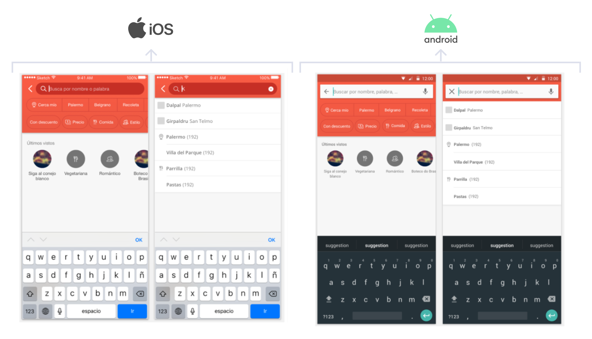
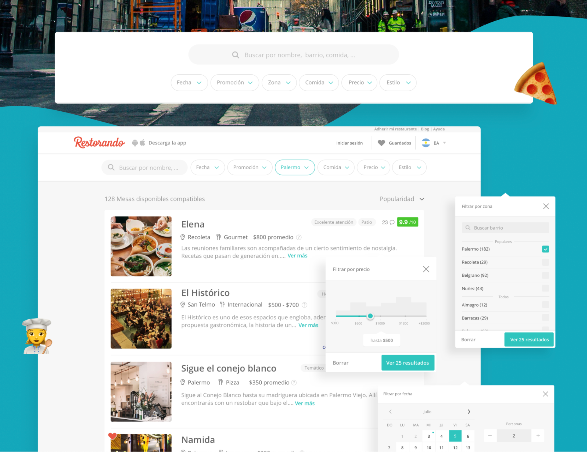

Restorando: Improving Android's users Search Experience
Argentina, 2018
Team
- Lead Designer: Stefania
- Manager: CTO
- Collaborators: A Product Designer with whom I maintained alignment throughout the process on our projects. Also, the development team provided technical feedback to ensure feasibility.
Understanding User Behavior Through Data Insights
After conducting an in-depth analysis of search insights across various platforms, several key user behaviors were identified:
- 90% of users search for restaurants to eat at on the same day. This suggests that complicating the date selection process with a full calendar may not be necessary at the initial stage.
- While users are generally unwilling to change the day they plan to go out, they are more flexible with the type of cuisine and the time of their visit.
- There is a significantly higher interest in promotions among Android users compared to iOS users.
- Users tend to include multiple variables in their searches. iOS users are more likely to use advanced search queries, which could explain why the conversion rate is lower on Android. There may be a relationship between the use of advanced search and conversion rates.
User Testing Insights
We asked users to search using the current app and a few prototypes to identify areas for improvement, and several important observations were made:
- Users often select multiple filters without realizing that each additional filter reduces the number of results. This led to frustration when users found that almost no options were available after specifying their preferences.
- Many users who search by typing do not recognize that there is a specific filter for certain categories. For example, searching for a neighborhood as text does not yield the same results as selecting it as a neighborhood category.
- Users found it much easier to choose between today, tomorrow, or another day compared to using a full calendar.
Cultural Insights from Interviews and Surveys
Based on interviews and surveys, we uncovered important regional differences:
- Dining Out Habits: In Brazil, dining out is more common, with 44% of respondents dining out more than eight times a week, compared to 44% of Argentinians who do so two to four times a week.
- Meal Importance: In Brazil, lunch is as important as dinner, with 87% of respondents eating both lunch and dinner out, compared to Argentina, where 99% dine out for dinner, but only 41% for lunch. This suggests that creating collections for lunch in Brazil and giving equal importance to understanding lunch as a dining occasion could be valuable.
Benchmarking Existing Mobile Search Experiences
A benchmark analysis of existing search experiences on mobile revealed the following patterns:
- Search categories or the minimal necessary options to trigger the search are typically presented first, with advanced filters only available on the results screen.
- Filter access is always visible in the results page.
- Tappable buttons are commonly used for selecting multiple variables.
- If the search involves selecting a region, it is clearly presented on the filter screen or the initial screen, and is pre-filled based on geolocation.
Proposed Improvements to the Search Experience
Based on the insights gathered, I developed an enhanced search experience with the following key improvements:
- The first selection option is the neighborhood, with "Near Me" as the default choice.
- Shortcuts to other relevant filters, such as date, discounts, cuisine, style, and online reservations, are displayed below the neighborhood selection.
- The date filter is set to "Today" by default, with the option to quickly modify or select a different date.
- The difference between discounts and price was made clearer, as the prospect of getting a discount increases user interest, even if the final amount spent is the same.
- Filters are visible and sticky at the top of the page. They collapse when scrolling down to maximize the results area but fully expand again when scrolling up.
- When the user types, we suggest matching restaurant names, food types, and neighborhoods based on the search. This approach allows users to search any filter by typing while delivering more accurate results compared to free-text searches.
- When tapping on the search box, users are shown their search history, making it easy to repeat past searches (often, restaurant names are searched by name).
Impact on Product Metrics
After launching this new version for Android users, we observed the following changes in product metrics:
- Searches Increased by 8%
- Interactions with Results Increased by 11%
- Conversions (bookings) Increased by 12%
- Nearly Twice as Many Users Added a Second Filter
This case study highlights how data-driven design decisions can significantly enhance user experience and drive better business outcomes.
Building on these learnings and the impressive results, similar enhancements were implemented across other platforms, including improvements to the mobile web, web and iOS search experience. These refinements ensure a consistent, optimized experience for all users, further driving engagement and conversions.
 